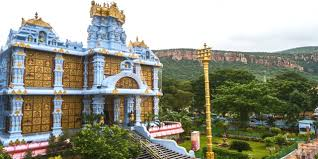

ISKCON Tirupati
Description and details about ISKCON Tirupati.
Location: Tirupati, Andhra Pradesh, India
Activities: Spiritual visits, cultural events
Transportation: Accessible by road from Tirupati.
Description and details about ISKCON Tirupati.
Location: Tirupati, Andhra Pradesh, India
Activities: Spiritual visits, cultural events
Transportation: Accessible by road from Tirupati.